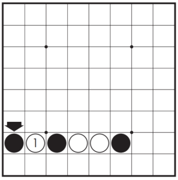
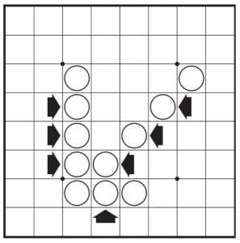

Object of the Game
The object of the game is to have the majority of discs facing up on the board showing one's own colour at the end of the game.
A Minute to Learn...
Each player takes 32 discs and chooses one colour to use throughout the game. Black places two black discs and White places two white discs as shown in Figure 1.
A move consists of "outflanking" your opponent's disc(s), then flipping the outflanked disc(s) to your colour.
To outflank means to place a disc on the board so that your opponent's row (or rows) of disc(s) is bordered at each end by a disc of your colour. (A "row" may be made up of one or more discs).
Here's one example:

White disc A was already in place on the board. The placement of white disc B outflanks the row of three black discs. White flips the outflanked discs and now the row looks like this:
Othello Rules
- Black always moves first.
- If on your turn you cannot outflank and flip at least one opposing disc, your turn is forfeited and your opponent moves again. However, if a move is available to you, you may not forfeit your turn.
- Players may not skip over their own colour disc(s) to outflank an opposing disc. 
- Disc(s) may only be outflanked as a direct result of a move and must fall in the direct line of the disc placed down.
- All discs outflanked in any one move must be flipped, even if it is to the player's advantage not to flip them at all.
- Once a disc is placed on a square, it can never be moved to another square later in the game.
- When it is no longer possible for either player to move, the game is over. Discs are counted and the player with the majority of their colour showing is the winner.

Figure 2: Disc displayed
Figure 3:These discs flipped
Figure 4: This disc outflanks and flips White disc 1 ONLY.

Figure 5: Disc placed here

Figure 6: These 2 discs flipped.Discs 1 and 2 are not flipped (even though they appear to be outflanked).
Note: It is possible for a game to end before all 64 squares are filled.